Benjamin Jäger
Slides first developed by Mine Çetinkaya-Rundel. Derivative of OpenIntro slides, shared under a CC BY-SA licence.
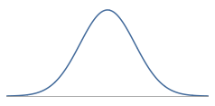
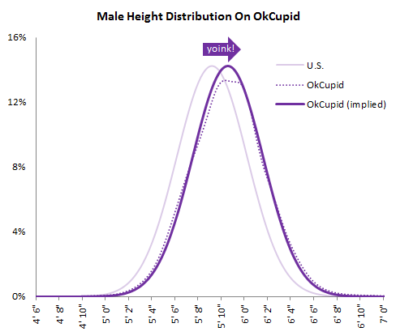
“The male heights on OkCupid very nearly follow the expected normal distribution – except the whole thing is shifted to the right of where it should be. Almost universally guys like to add a couple inches.”
“You can also see a more subtle vanity at work: starting at roughly 5’ 8”, the top of the dotted curve tilts even further rightward. This means that guys as they get closer to six feet round up a bit more than usual, stretching for that coveted psychological benchmark.”
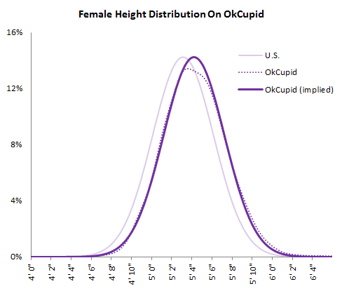
“When we looked into the data for women, we were surprised to see height exaggeration was just as widespread, though without the lurch towards a benchmark height.”
\(\mu\): mean, \(\sigma\): standard deviation \[N(\mu = 0, \sigma = 1) \hspace{1.4cm} N(\mu = 19, \sigma = 4)\]
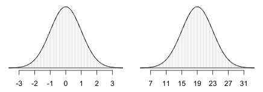
SAT scores are distributed nearly normally with mean 1500 and standard deviation 300. ACT scores are distributed nearly normally with mean 21 and standard deviation 5. A college admissions officer wants to determine which of the two applicants scored better on their standardized test with respect to the other test takers: Pam, who earned an 1800 on her SAT, or Jim, who scored a 24 on his ACT?
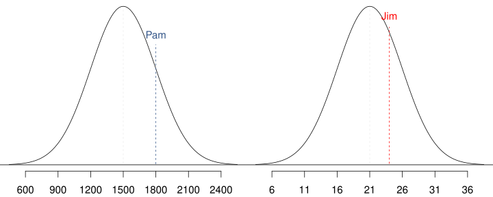
Since we cannot just compare these two raw scores, we instead compare how many standard deviations beyond the mean each observation is.
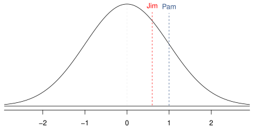
These are called standardized scores, or Z scores.
Z score of an observation is the number of standard deviations it falls above or below the mean.
\[Z = \frac{observation - mean}{SD}\]
Z scores are defined for distributions of any shape, but only when the distribution is normal can we use Z scores to calculate percentiles.
Observations that are more than 2 SD away from the mean (\(|Z| > 2\)) are usually considered unusual.
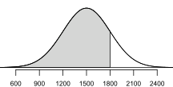
There are many ways to compute percentiles/areas under the curve:
pnorm(1800, mean = 1500, sd = 300) \(\phantom{aaa}\) [1] 0.8413447
Applet: https://gallery.shinyapps.io/dist_calc/
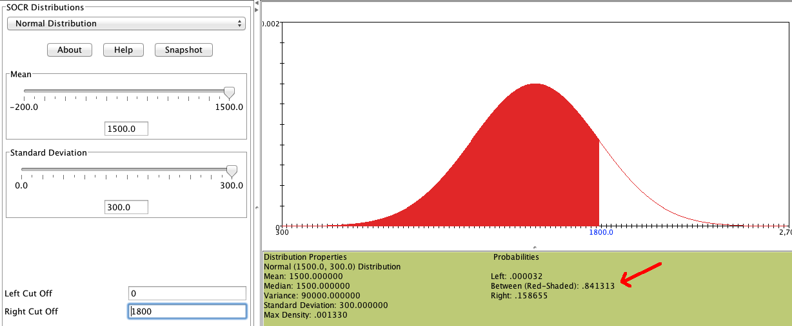
| Second decimal place of (Z) | ||||||||||
| (Z) | 0.00 | 0.01 | 0.02 | 0.03 | 0.04 | 0.05 | 0.06 | 0.07 | 0.08 | 0.09 |
| 0.0 | 0.5000 | 0.5040 | 0.5080 | 0.5120 | 0.5160 | 0.5199 | 0.5239 | 0.5279 | 0.5319 | 0.5359 |
| 0.1 | 0.5398 | 0.5438 | 0.5478 | 0.5517 | 0.5557 | 0.5596 | 0.5636 | 0.5675 | 0.5714 | 0.5753 |
| 0.2 | 0.5793 | 0.5832 | 0.5871 | 0.5910 | 0.5948 | 0.5987 | 0.6026 | 0.6064 | 0.6103 | 0.6141 |
| 0.3 | 0.6179 | 0.6217 | 0.6255 | 0.6293 | 0.6331 | 0.6368 | 0.6406 | 0.6443 | 0.6480 | 0.6517 |
| 0.4 | 0.6554 | 0.6591 | 0.6628 | 0.6664 | 0.6700 | 0.6736 | 0.6772 | 0.6808 | 0.6844 | 0.6879 |
| 0.5 | 0.6915 | 0.6950 | 0.6985 | 0.7019 | 0.7054 | 0.7088 | 0.7123 | 0.7157 | 0.7190 | 0.7224 |
| 0.6 | 0.7257 | 0.7291 | 0.7324 | 0.7357 | 0.7389 | 0.7422 | 0.7454 | 0.7486 | 0.7517 | 0.7549 |
| 0.7 | 0.7580 | 0.7611 | 0.7642 | 0.7673 | 0.7704 | 0.7734 | 0.7764 | 0.7794 | 0.7823 | 0.7852 |
| 0.8 | 0.7881 | 0.7910 | 0.7939 | 0.7967 | 0.7995 | 0.8023 | 0.8051 | 0.8078 | 0.8106 | 0.8133 |
| 0.9 | 0.8159 | 0.8186 | 0.8212 | 0.8238 | 0.8264 | 0.8289 | 0.8315 | 0.8340 | 0.8365 | 0.8389 |
| 1.0 | 0.8413 | 0.8438 | 0.8461 | 0.8485 | 0.8508 | 0.8531 | 0.8554 | 0.8577 | 0.8599 | 0.8621 |
| 1.1 | 0.8643 | 0.8665 | 0.8686 | 0.8708 | 0.8729 | 0.8749 | 0.8770 | 0.8790 | 0.8810 | 0.8830 |
| 1.2 | 0.8849 | 0.8869 | 0.8888 | 0.8907 | 0.8925 | 0.8944 | 0.8962 | 0.8980 | 0.8997 | 0.9015 |
At Heinz ketchup factory the amounts which go into bottles of ketchup are supposed to be normally distributed with mean 36 oz. and standard deviation 0.11 oz. Once every 30 minutes a bottle is selected from the production line, and its contents are noted precisely. If the amount of ketchup in the bottle is below 35.8 oz. or above 36.2 oz., then the bottle fails the quality control inspection. What percent of bottles have less than 35.8 ounces of ketchup?
Let \(X\) = amount of ketchup in a bottle: \(X \sim N(\mu = 36, \sigma = 0.11)\)
\[Z = \frac{35.8 - 36}{0.11} = -1.82\]
\(\phantom{blaaa}\)
pnorm(35.8, mean = 36, sd = 0.11) \(\phantom{aaa}\) [1] 0.0345
OR
pnorm(-1.82, mean = 0, sd = 1) \(\phantom{aaa}\) [1] 0.0344
OR
pnorm(-1.82) \(\phantom{aaa}\) [1] 0.0344
What percent of bottles pass the quality control inspection?
[Participate ⟹ strawpoll.live and use the code 833295]
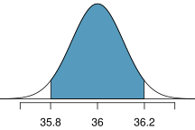
=
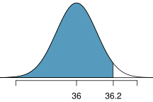
-
Body temperatures of healthy humans are distributed nearly normally with mean 98.2\(°\)F and standard deviation 0.73\(°\)F. What is the cutoff for the lowest 3% of human body temperatures?
\[\begin{eqnarray*} P(X < x) &=& 0.03 \rightarrow P(Z < \color{#FF8000}{-1.88}) = 0.03 \\ Z &=& \frac{obs~-~mean}{SD} \\ &\phantom{=}&\rightarrow \frac{x - 98.2}{0.73} = -1.88 \\ x &=& (-1.88 \times 0.73) + 98.2 = 96.8°F \end{eqnarray*}\]
qnorm(0.03) \(\phantom{blaaa}\) [1] -1.880794
Mackowiak, Wasserman, and Levine (1992), A Critical Appraisal of 98.6 Degrees F, the Upper Limit of the Normal Body Temperature, and Other Legacies of Carl Reinhold August Wunderlick.
Body temperatures of healthy humans are distributed nearly normally with mean 98.2\(°\)F and standard deviation 0.73\(°\)F. What is the cutoff for the highest 10% of human body temperatures?
[Participate ⟹ strawpoll.live and use the code 833295]
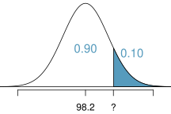
qnorm(0.1, mean = 98.2, sd = 0.73, lower.tail = FALSE) = 99.13553
For nearly normally distributed data,
It is possible for observations to fall 4, 5, or more standard deviations away from the mean, but these occurrences are very rare if the data are nearly normal.
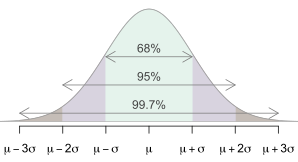
SAT scores are distributed nearly normally with mean 1500 and standard deviation 300.
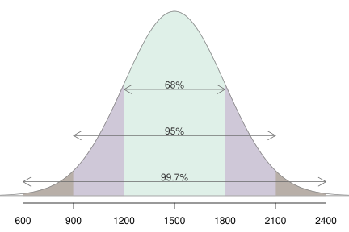
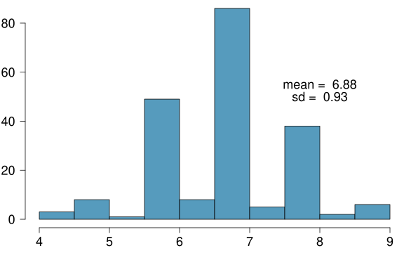
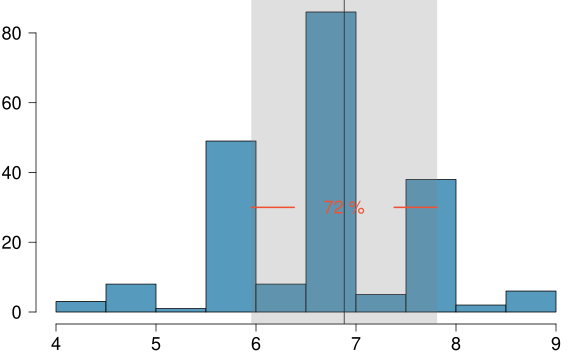
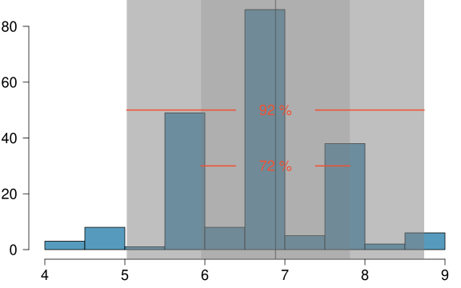
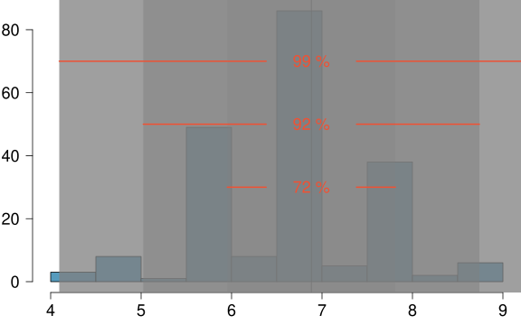
Which of the following is false?
[Participate ⟹ strawpoll.live and use the code 833295]
Dr. Smith wants to repeat Milgram’s experiments but she only wants to sample people until she finds someone who will not inflict a severe shock. What is the probability that she stops after the first person?
\[P(1^{st}~person~refuses) = 0.35\]
… the third person?
\[P(1^{st}~\&~2^{nd}~shock,~3^{rd}~ref.) = \begin{array}{c}\underline{S} \\ 0.65\end{array} \times \begin{array}{c}\underline{S} \\ 0.65\end{array} \times \begin{array}{c}\underline{R} \\ 0.35\end{array} = 0.65^2 \times 0.35 \approx 0.15\]
… the tenth person?
\[P(9~shock,~10^{th}~ref.) = \underbrace{\begin{array}{c}\underline{S} \\ 0.65\end{array} \times \cdots \times \begin{array}{c}\underline{S} \\ 0.65\end{array}}_{9~of~these} \times \begin{array}{c}\underline{R} \\ 0.35\end{array} = 0.65^9 \times 0.35 \approx 0.0072\]
Geometric distribution describes the waiting time until a success for independent and identically distributed (iid) Bernouilli random variables.
Geometric probabilities
If \(p\) represents probability of success, \((1-p)\) represents probability of failure, and \(n\) represents number of independent trials \[P(success~on~the~n^{th}~trial) = (1-p)^{n-1} p\]
Can we calculate the probability of rolling a 6 for the first time on the 6\(^{th}\) roll of a die using the geometric distribution? Note that what was a success (rolling a 6) and what was a failure (not rolling a 6) are clearly defined and one or the other must happen for each trial.
\[P(6~on~the~6^{th}~roll) = \left( \frac{5}{6} \right)^5 \left( \frac{1}{6} \right) \approx 0.067\]
How many people is Dr. Smith expected to test before finding the first one that refuses to administer the shock?
The expected value, or the mean, of a geometric distribution is defined as \(\frac{1}{p}\). \[\mu = \frac{1}{p} = \frac{1}{0.35} = 2.86\]
She is expected to test 2.86 people before finding the first one that refuses to administer the shock.
But how can she test a non-whole number of people?
Mean and standard deviation of geometric distribution
\[\mu = \frac{1}{p} \qquad \qquad \sigma = \sqrt{\frac{1-p}{p^2}}\]
Going back to Dr. Smith’s experiment:
\[\sigma = \sqrt{\frac{1-p}{p^2}} = \sqrt{\frac{1-0.35}{0.35^2}} = 2.3\]
Dr. Smith is expected to test 2.86 people before finding the first one that refuses to administer the shock, give or take 2.3 people.
These values only make sense in the context of repeating the experiment many many times.
Suppose we randomly select four individuals to participate in this experiment. What is the probability that exactly 1 of them will refuse to administer the shock?
Let’s call these people Allen (A), Brittany (B), Caroline (C), and Damian (D). Each one of the four scenarios below is possible :
The probability of exactly one 1 of 4 people is \[0.0961+ 0.0961 + 0.0961 + 0.0961 = 4 \times 0.0961 = 0.3844\]
The question from the prior slide asked for the probability of given number of successes, \(k\), in a given number of trials, \(n\), (\(k = 1\) success in \(n = 4\) trials), and we calculated this probability as \[\#~of~scenarios \times P(single~scenario)\]
The Binomial distribution describes the probability of having exactly \(k\) successes in \(n\) independent Bernouilli trials with probability of success \(p\).
Earlier we wrote out all possible scenarios that fit the condition of exactly one person refusing to administer the shock. If \(n\) was larger and/or \(k\) was different than 1, for example, \(n = 9\) and \(k = 2\):
| RRSSSSSSS |
| SRRSSSSSS |
| SSRRSSSSS |
| \(\cdots\) |
| SSRSSRSSS |
| \(\cdots\) |
| SSSSSSSRR |
writing out all possible scenarios would be incredibly tedious and prone to errors.
Choose function
The choose function is useful for calculating the number of ways to choose \(k\) successes in \(n\) trials. \[{n \choose k} = \frac{n!}{k! (n - k)!}\]
You can also use R for these calculations:
choose(9,2) \(\phantom{blaaa}\) [1] 36
Binomial probabilities
If \(p\) represents probability of success, \((1-p)\) represents probability of failure, \(n\) represents number of independent trials, and \(k\) represents number of successes \[P(k~successes~in~n~trials) = {n \choose k}~p^k~(1-p)^{(n-k)}\]
Which of the following is not a condition that needs to be met for the binomial distribution to be applicable?
A 2012 Gallup survey suggests that 26.2% of Americans are obese. Among a random sample of 10 Americans, what is the probability that exactly 8 are obese?
Gallup: http://www.gallup.com/poll/160061/obesity-rate-stable-2012.aspx, January 23, 2013.
A 2012 Gallup survey suggests that 26.2% of Americans are obese. Among a random sample of 10 Americans, what is the probability that exactly 8 are obese?
[Participate ⟹ strawpoll.live and use the code 833295]
A 2012 Gallup survey suggests that 26.2% of Americans are obese.
Among a random sample of 100 Americans, how many would you expect to be obese?
Mean and standard deviation of binomial distribution
\[\mu = np \qquad \qquad \sigma = \sqrt{np(1-p)}\]
Going back to the obesity rate:
\[\sigma = \sqrt{np(1-p)} = \sqrt{100 \times 0.262 \times 0.738} \approx 4.4\]
We would expect 26.2 out of 100 randomly sampled Americans to be obese, with a standard deviation of 4.4.
Mean and standard deviation of a binomial might not always be whole numbers, and that is alright, these values represent what we would expect to see on average.
Using the notion that observations that are more than 2 standard deviations away from the mean are considered unusual and the mean and the standard deviation we just computed, we can calculate a range for the plausible number of obese Americans in random samples of 100.
\[26.2 \pm (2 \times 4.4) = (17.4, 35)\]
An August 2012 Gallup poll suggests that 13% of Americans think home schooling provides an excellent education for children. Would a random sample of 1,000 Americans where only 100 share this opinion be considered unusual?
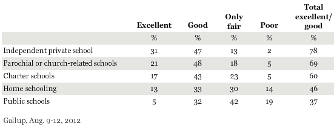
\[\begin{align*} \mu &= np = 1,000 \times 0.13 = 130 \\ \sigma &= \sqrt{np(1-p)} = \sqrt{1,000 \times 0.13 \times 0.87} \approx 10.6 \end{align*}\]
Shapes of binomial distributions
For this activity you will use a web applet. Go to https://gallery.shinyapps.io/dist_calc/ and choose Binomial coin experiment in the drop down menu on the left.
Set the number of trials to 20 and the probability of success to 0.15. Describe the shape of the distribution of number of successes.
Keeping \(p\) constant at 0.15, determine the minimum sample size required to obtain a unimodal and symmetric distribution of number of successes. Please submit only one response per team.
Further considerations:
Hollow histograms of samples from the binomial model where \(p = 0.10\) and \(n = 10\), \(30\), \(100\), and \(300\). What happens as \(n\) increases?
The sample size is considered large enough if the expected number of successes and failures are both at least 10. \[np \ge 10 \qquad \text{ and } \qquad n(1-p) \ge 10\]
\(10 \times 0.13 = 1.3; 10 \times (1 - 0.13) = 8.7\)
Below are four pairs of Binomial distribution parameters. Which distribution can be approximated by the normal distribution?
[Participate ⟹ strawpoll.live and use the code 833295]
A recent study found that “Facebook users get more than they give”. For example:
Any guesses for how this pattern can be explained?
Power users contribute much more content than the typical user.
This study also found that approximately 25% of Facebook users are considered power users. The same study found that the average Facebook user has 245 friends. What is the probability that the average Facebook user with 245 friends has 70 or more friends who would be considered power users? Note any assumptions you must make.
We are given that \(n = 245, p = 0.25\), and we are asked for the probability \(P(K \ge 70)\). To proceed, we need independence, which we’ll assume but could check if we had access to more Facebook data.
\[\begin{align*} P(X \ge 70) &= P(K = 70\text{ or }K = 71\text{ or }K = 72\text{ or }\cdots\text{ or } K = 245) \\ &= P(K = 70) + P(K = 71) + P(K = 72) + \\ & \cdots + P(K = 245) \end{align*}\]
This seems like an awful lot of work…
When the sample size is large enough, the binomial distribution with parameters \(n\) and \(p\) can be approximated by the normal model with parameters \(\mu = np\) and \(\sigma = \sqrt{np(1-p)}\).
In the case of the Facebook power users, \(n = 245\) and \(p = 0.25\). \[\mu = 245 \times 0.25 = 61.25 \qquad \sigma = \sqrt{245 \times 0.25 \times 0.75} = 6.78\]
\(Bin(n = 245, p = 0.25) \approx N(\mu = 61.25, \sigma = 6.78)\).
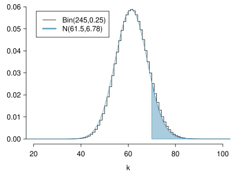
What is the probability that the average Facebook user with 245 friends has 70 or more friends who would be considered power users?
\[Z = \frac{obs - mean}{SD} = \frac{70 - 61.25}{6.78}\]
\[P(Z > 1.29) = 1 - 0.9015 = 0.0985\]
pnorm(1.29) \(\phantom{blaaa}\) [1] 0.9014747
The negative binomial distribution describes the probability of observing the \(k^{th}\) success on the \(n^{th}\) trial.
The following four conditions are useful for identifying a negative binomial case:
Note that the first three conditions are common to the binomial distribution.
The probability to find \(k^{th}\) success on the \(n^{th}\) trial is
\[\begin{eqnarray*} P(k^{th} \text{ success on the } n^{th} \text{ trial}) = {n-1 \choose k-1}~p^k~(1-p)^{n-k} \end{eqnarray*}\]
where \(p\) is the probability that an individual trial is a success. All trials are assumed to be independent.
A college student working at a psychology lab is asked to recruit 10 couples to participate in a study. She decides to stand outside the student center and ask every 5\(^{th}\) person leaving the building whether they are in a relationship and, if so, whether they would like to participate in the study with their significant other. Suppose the probability of finding such a person is 10%. What is the probability that she will need to ask 30 people before she hits her goal?
Given: \(p = 0.10\), \(k = 10\), \(n = 30\). We are asked to find the probability of \(10^{th}\) success on the \(30^{th}\) trial, therefore we use the negative binomial distribution.
\[\begin{eqnarray*} P(\text{$10^{th}$ success on the $30^{th}$ trial}) &=& {29 \choose 9} \times 0.10^{10} \times 0.90^{20} \\ &\phantom{=}&\phantom{ 10,015,005 \times 0.10^{10} \times 0.90^{20}} \\ &\phantom{=}&\phantom{ 0.00012} \end{eqnarray*}\]
\[\begin{eqnarray*} P(\text{$10^{th}$ success on the $30^{th}$ trial}) &=& {29 \choose 9} \times 0.10^{10} \times 0.90^{20} \\ &=& 10,015,005 \times 0.10^{10} \times 0.90^{20} \\ &\phantom{=}&\phantom{ 0.00012} \end{eqnarray*}\]
\[\begin{eqnarray*} P(\text{$10^{th}$ success on the $30^{th}$ trial}) &=& {29 \choose 9} \times 0.10^{10} \times 0.90^{20} \\ &=& 10,015,005 \times 0.10^{10} \times 0.90^{20} \\ &=& 0.00012 \end{eqnarray*}\]
How is the negative binomial distribution different from the binomial distribution?
Which of the following describes a case where we would use the negative binomial distribution to calculate the desired probability?
[Participate ⟹ strawpoll.live and use the code 833295]
Poisson distribution
P(observe \(k\) rare events) = \(\frac{\lambda^k e^{-\lambda}}{k!}\),
where \(k\) may take a value 0, 1, 2, and so on, and \(k!\) represents \(k\)-factorial. The letter \(e \approx 2.718\) is the base of the natural logarithm.
The mean and standard deviation of this distribution are \(\lambda\) and \(\sqrt{\lambda}\), respectively.
Suppose that in a rural region of a developing country electricity power failures occur following a Poisson distribution with an average of 2 failures every week. Calculate the probability that in a given week the electricity fails only once.
Given \(\lambda = 2\).
\[\begin{eqnarray*} P(\text{only 1 failure in a week}) &=& \frac{2^1 \times e^{-2}}{1!} \\ &\phantom{=}&\phantom{ \frac{2 \times e^{-2}}{1}} \\ &\phantom{=}&\phantom{ 0.27} \end{eqnarray*}\]
\[\begin{eqnarray*} P(\text{only 1 failure in a week}) &=& \frac{2^1 \times e^{-2}}{1!} \\ &=& \frac{2 \times e^{-2}}{1} \\ &\phantom{=}&\phantom{ 0.27} \end{eqnarray*}\]
\[\begin{eqnarray*} P(\text{only 1 failure in a week}) &=& \frac{2^1 \times e^{-2}}{1!} \\ &=& \frac{2 \times e^{-2}}{1} \\ &=& 0.27 \end{eqnarray*}\]
Suppose that in a rural region of a developing country electricity power failures occur following a Poisson distribution with an average of 2 failures every week. Calculate the probability that on a given day the electricity fails three times.
We are given the weekly failure rate, but to answer this question we need to first calculate the average rate of failure on a given day: \(\lambda_{day} = \frac{2}{7} = 0.2857\). Note that we are assuming that the probability of power failure is the same on any day of the week, i.e. we assume independence.
\[\begin{eqnarray*} P(\text{3 failures on a given day}) &=& \frac{0.2857^1 \times e^{-0.2857}}{3!} \\ &\phantom{=}&\phantom{ \frac{0.2857 \times e^{-0.2857}}{6}} \\ &\phantom{=}&\phantom{ 0.0358} \end{eqnarray*}\]
\[\begin{eqnarray*} P(\text{3 failures on a given day}) &=& \frac{0.2857^1 \times e^{-0.2857}}{3!} \\ &=& \frac{0.2857 \times e^{-0.2857}}{6} \\ &\phantom{=}&\phantom{ 0.0358} \end{eqnarray*}\]
\[\begin{eqnarray*} P(\text{3 failures on a given day}) &=& \frac{0.2857^1 \times e^{-0.2857}}{3!} \\ &=& \frac{0.2857 \times e^{-0.2857}}{6} \\ &=& 0.0358 \end{eqnarray*}\]
DSK803 · Chapter 4: Distributions of random variables